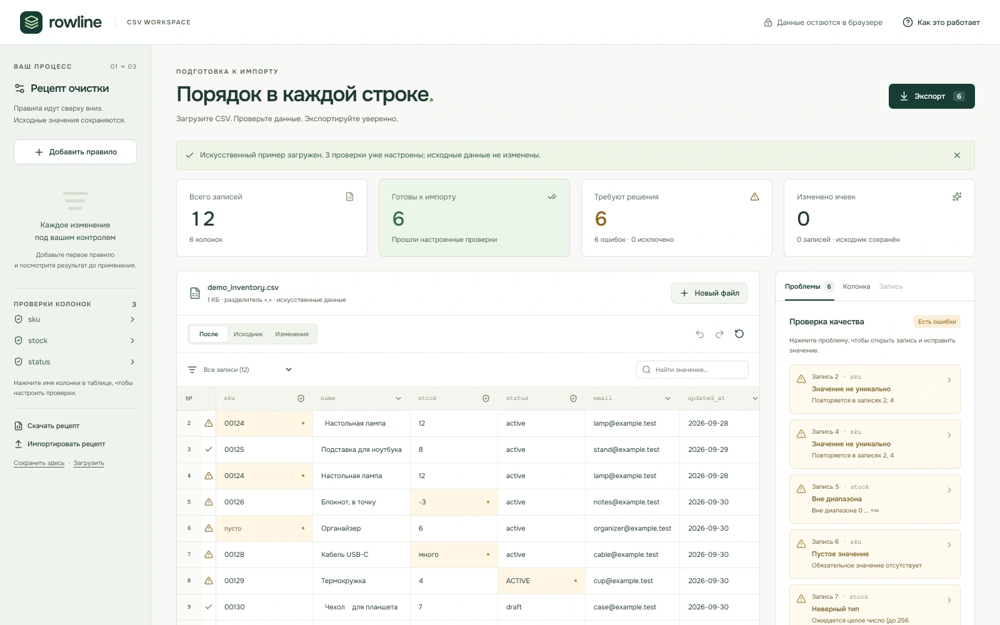
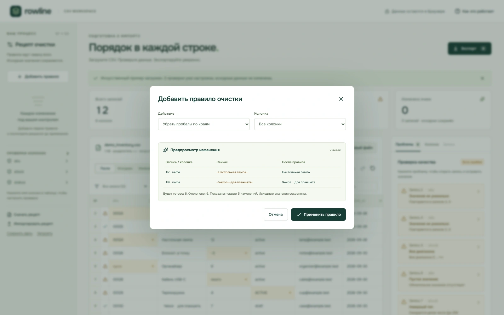

Инструменты
Rowline
Очистка CSV с отменой правок и экспортом.
Кадры сняты с публичного демо 4 октября 2026.

Изображение не загрузилось. Описание и ссылки доступны ниже.Увеличить кадрЗадача и подход
Исходные данные нельзя терять, а дубликаты нельзя удалять без решения человека.
Инструменты
- React
- TypeScript
- Web Worker
- CSV
Что получилось
Исходник отдельно от правок, undo/redo и явный выбор для дубликатов. Разбор и проверки — в Web Worker.
Границы проекта
Данные на кадрах искусственные: встроенный пример. Обработка файлов происходит в браузере.

Изображение не загрузилось. Описание и ссылки доступны ниже.Увеличить кадрПопробуйте короткий пример
Данные → правка → результатК кейсу
Rowline
Мини-примерТри искусственные строки. Уберите пробелы в SKU — ведущие нули сохранятся. Строка без SKU останется ошибкой.
| SKU | stock | Проверка |
|---|---|---|
·00124· | 12 | Пробелы по краям |
00125 | 8 | Готово |
| Пусто | 6 | Нужен SKU |
· обозначает пробел в исходном значении.
Правку можно отменить. Экспорт содержит две строки с заполненным SKU.